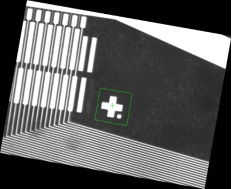
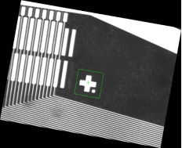区域定位的目的旨在图像中确定一个或多个预先训练过的特征的位置，并对其质量进行度量。图1为定位示例，其中感兴趣特征为蓝色框区域的十字，我们选取包含感兴趣特征的子图作为参考图像进行训练，并得到训练模式，用该模式我们可以在图中搜索其它该感兴趣模式，或在其它类似图中搜索该模式。
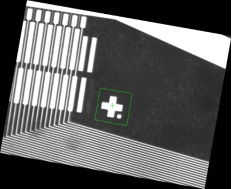
根据训练的区域特征，找出匹配区域的位置，给出结果个数、结果数组。
区域定位以图像灰度信息为基础，用归一化相关系数作为相似性度量指标，在实时图像中搜索与参考图像（包含特定特征）相一致特征的位置。
工具执行流程：添加工具，链接图像→训练图像→执行搜索。
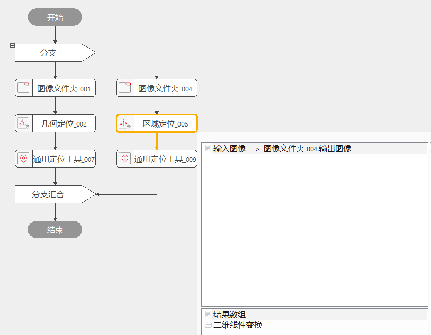
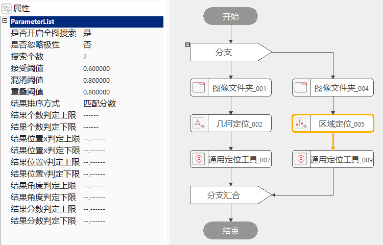
是否全图搜索
开启全图搜索的开关。默认开启，整个实时的采样图片都是该工具的搜索范围，会在整个实时的采样图片寻找匹配的区域；当选择“否”时，会增加下拉“是否外部输入搜索区域”选择“是”时，数据链中会增加外部搜索区域链接，如图5；当选择“否”时，会增加搜索区域设置，搜索区域要大于训练区域，如图6；如果匹配区域在整个实时的采样图片上有多处匹配训练区域，建议添加搜索区域准确定位。
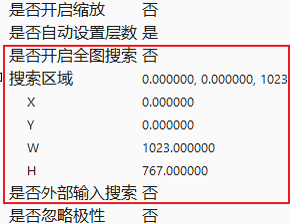
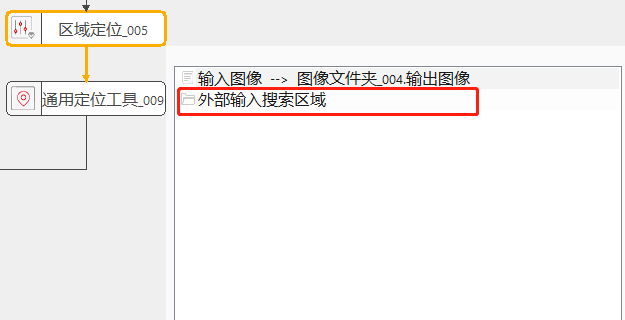
结果个数上下限参数
设定结果个数的判定区间，默认为“——”不设置判定区间，可设置的判定区间为[0, 5000]且上限大于下限或只设置一个，只设置一个则进行单边判定，大于等于判定下限或小于等于上限执行结果为成功，反之失败；当设置两个判定区间后，当结果个数大于等于判定下限小于等于上限时执行结果为成功，反之失败。
结果位置X上下限参数
设定结果位置X的判定区间，默认为“–.——”不设置判定区间，可设置的判定区间为[0,100000]且上限大于下限或只设置一个，只设置一个则进行单边判定，大于等于判定下限或小于等于上限执行结果为成功，反之失败；当设置两个判定区间后，当结果个数大于等于判定下限小于等于上限时执行结果为成功，反之失败。
结果位置Y上下限参数
设定结果位置Y的判定区间，默认为“–.——”不设置判定区间，可设置的判定区间为[0, 100000]且上限大于下限或只设置一个，只设置一个则进行单边判定，大于等于判定下限或小于等于上限执行结果为成功，反之失败；当设置两个判定区间后，当结果个数大于等于判定下限小于等于上限时执行结果为成功，反之失败。
结果角度上下限参数
设定结果角度的判定区间，默认为“–.——”不设置判定区间，可设置的判定区间为[-360, 360]且上限大于下限或只设置一个，只设置一个则进行单边判定，大于等于判定下限或小于等于上限执行结果为成功，反之失败；当设置两个判定区间后，当结果个数大于等于判定下限小于等于上限时执行结果为成功，反之失败。
结果分数上下限参数
设定结果分数的判定区间，默认为“–.——”不设置判定区间，可设置的判定区间为[0, 1]且上限大于下限或只设置一个，只设置一个则进行单边判定，大于等于判定下限或小于等于上限执行结果为成功，反之失败；当设置两个判定区间后，当结果个数大于等于判定下限小于等于上限时执行结果为成功，反之失败。
掩膜
高级界面中点击“启动掩膜”以及“设置掩膜图像”后，就可以在模板训练过程中，屏蔽掉不参与模式训练的区域，减少参与模式训练的几何特征了。掩膜效果如图7所示。
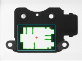 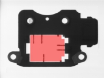 
右键工具→属性→打开高级界面→训练参数，如图8；
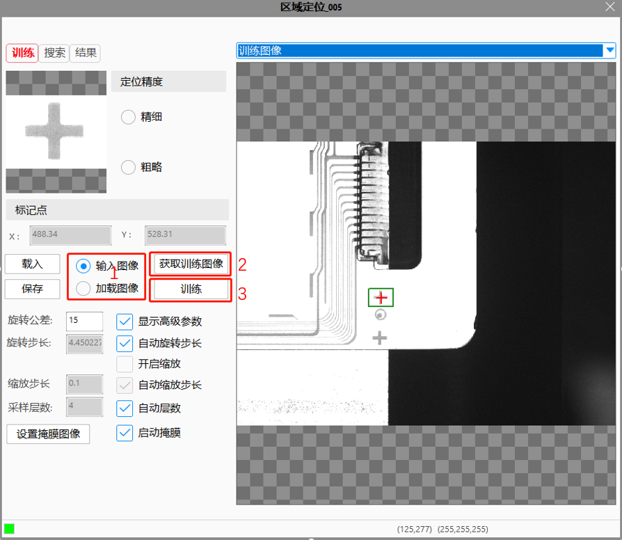
（1）首先选择“训练图像”来源：
a.“输入图像"：训练图像从参数链“输入图像”获取；
b.“加载图像"：训练图像由离线加载方式从文件获取；
（2）点击“获取训练图像”：更新训练图像，点击后会先进行弹框提示；
（3）点击“训练”：进行训练；
根据设定的搜索参数和判定结果参数返回相应的搜索结果，如图9；
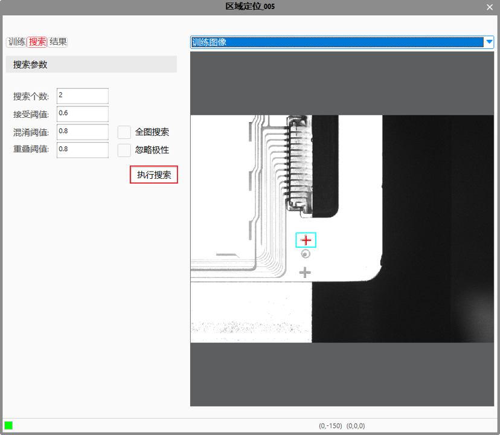
| 注意事项 |
|---|
| 1. 区域定位必须配置训练图像和输入图像，要进行图像训练。 |
| 2. 搜索区域不能超过图像边界，搜索区域不能小于训练区域。 |
| 参数名称 | 参数说明 |
|---|---|
| 训练区域 | 模板图像中参与训练的矩形区域。 |
| 标记点 | 标记点用于辅助定位。在此处可手动输入标记点的X轴、Y轴坐标。 |
| 定位精度 | 包括高精、精细、粗略三种形式，耗时依次减少，执行结果中的分数依次降低。 |
| 定位算法 | 包括快速、保守两种形式，耗时逐渐增加。 |
| 旋转公差 | 搜索区域的旋转范围。取值范围是[1, 180]，可取小数。当旋转公差取值为n时，该工具在执行时的实际旋转范围是[-n,n]。 |
| 是否显示高级参数 | 选择是否显示与旋转步长、缩放步长、采样层数、缩放等有关的参数。 |
| 是否自动设置旋转步长 | 旋转步长是指每次旋转的间隔，且旋转步长要小于旋转公差。旋转步长的取值范围是[0.1,10]，可取小数。 |
| 是否开启缩放 | 控制缩放步长是否起作用。 |
| 是否自动设置缩放步长 | 缩放步长表示每次缩放的间隔。缩放步长的取值范围是[0.01, 0.5]。 |
| 是否自动设置层数 | 采样层数是指把图像分为采样层数个层次。增大采样层数，执行搜索的时间较短，但是采样层数设置的过大可能会找不到结果。自动层数是指自动选择采样层数。采样层数的取值范围是[1, 10]，只支持整数。 |
| 是否开启全图搜索 | 开启全图搜索的开关。当选择“是”时，整个实时的采样图片都是该工具的搜索范围；当选择“否”时，Edit视图中的“搜索区域”仿射矩形是该工具的搜索范围。搜索区域要大于训练区域。 |
| 是否忽略极性 | 极性指模式的几何特征的灰度级过渡形式，即从亮到暗或从暗到亮。 |
| 搜索个数 | 取值范围[1, +∞)，只能取整数。 |
| 接受阈值 | 训练模板与实时搜索结果之间有一个匹配程度的分数，当匹配分数高于接受阈值时表明实时搜索成功。接受阈值的取值范围是(0, 1)。 |
| 混淆阈值 | 反映的是训练模式中没有的特征在实时定位结果中被找到的多少，混乱点越多，混乱值越高。实时定位结果中含有而训练模板中没有的额外特征。取值范围为[0, 1]。 |
| 重叠阈值 | 如果存在多个模式，模式的重复度必须小于重叠比例阈值，否则将删除重复模式。取值范围[0, 1]。 |
| 开启并行运算 | 是否开启并行运算，选择是时，算法将开启OpenMp并行计算方式，可以提升计算速度，但可能出现耗时不稳定的情况，选择否时，算法将关闭OpenMp并行计算。 |
| 结果排序方式 | 当有多个结果输出时，按选定的方式从大到小排序；默认以匹配分数从大到小排序。 |
| 结果个数上限 | 设定结果个数上限，默认为“——”不判定，可设置的判定区间为[0, 5000]且大于下限，当结果个数大于上限时执行结果为失败。 |
| 结果个数下限 | 设定结果个数下限，默认为“——”不判定，可设置的判定区间为[0, 5000]且小于上限，当结果个数小于下限时执行结果为失败。 |
| 结果位置X上限 | 设定结果位置X上限，默认为“–.——”不判定，可设置的判定区间为[0, 100000]且大于下限，当结果位置X大于上限时执行结果为失败。 |
| 结果位置X下限 | 设定结果位置X下限，默认为“–.——”不判定，可设置的判定区间为[0, 100000]且小于上限，当结果位置X小于下限时执行结果为失败。 |
| 结果位置Y上限 | 设定结果位置Y上限，默认为“–.——”不判定，可设置的判定区间为[0, 100000]且大于下限，当结果位置Y大于上限时执行结果为失败。 |
| 结果位置Y下限 | 设定结果位置Y下限，默认为“–.——”不判定，可设置的判定区间为[0, 100000]且小于上限，当结果位置Y小于下限时执行结果为失败。 |
| 结果角度上限 | 设定结果角度上限，默认为“–.——”不判定，可设置的判定区间为[-360, 360]且大于下限，当结果角度大于上限时执行结果为失败。 |
| 结果角度下限 | 设定结果角度下限，默认为“–.——”不判定，可设置的判定区间为[-360, 360]且小于上限，当结果角度小于下限时执行结果为失败。 |
| 结果分数上限 | 设定结果分数上限，默认为“–.——”不判定，可设置的判定区间为[0, 1]且大于下限，当结果分数大于上限时执行结果为失败。 |
| 结果分数下限 | 设定结果分数下限，默认为“–.——”不判定，可设置的判定区间为[0, 1]且小于上限，当结果分数小于下限时执行结果为失败。 |
| 参数名称 | 参数说明 |
|---|---|
| 输入图像宽度、高度、像素大小。 | |
| 结果个数 | 满足预设条件的结果个数。 |
| 结果数组 | 满足预设条件的结果信息。 |
| 二维线性变换 | 目标相对于模板的平移、旋转、缩放变换。 |
| 工具执行结果 | 工具执行结果。 |
| 工具执行时间 | 工具执行时间。 |
参见“\Samples\通用定位工具.gvp”。